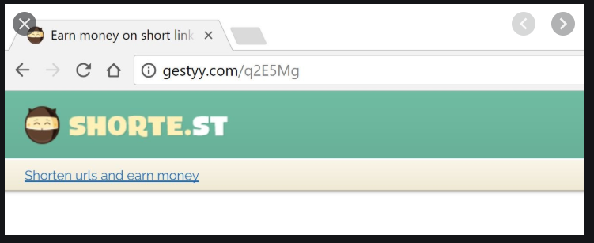
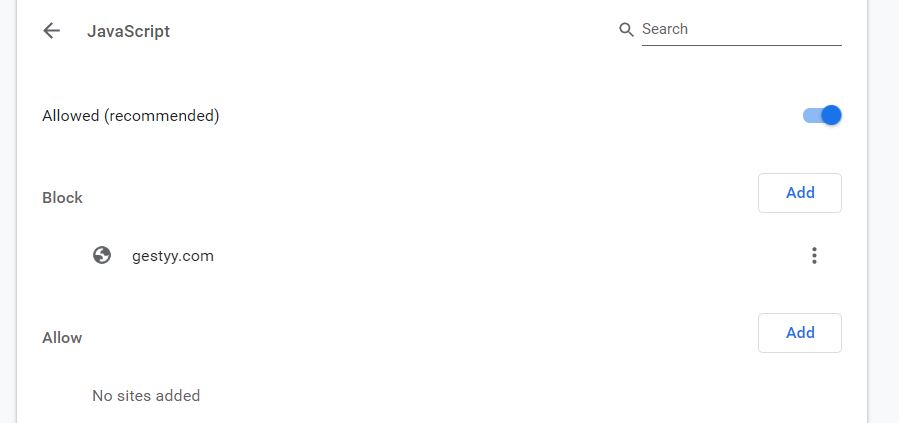

Charlette's Website
#8th Blog
The Gestyy virus
The what virus?

The Gestyy virus is an unwanted app software similar to a browser add-on and is known to re-route the users to advertising-heavy sites. Gestyy is also known to change the user’s settings without their permission and is known as a browser hijacker.
So, what about this virus? Well something I found interesting happened to my sister. The other day my sister was complaining that during a Zoom call her phone kept redirecting mid call to the Gestyy.com site. She got very frustrated, so she tried to fix it herself. In her Google Chrome settings she went under the “Site settings” and went into “Java script” and under the “Blocked sites” section she added the Gestyy.com web address. She thought she solved the problem and that she would no longer be redirected when using her phone. However, the redirect still popped up. Only this time there was no contents on the page - it was just a blank page that her phone kept being redirected to.

This was very interesting for me, as I assumed that by blocking the Java Script code what she essentially did, was block all the visual elements designed for the webpage. Therefore, the virus was still on her phone, but, due to her blocking the Java Script, all the visual aspects of the webpage were not accessable anymore. Yet the HTML basis for the web page was still showing and that is why she was now getting a blank redirect instead.
So, in order to get rid of the virus she Googled and came across the HowToRemove.Guide site that told her of all the possible things she could do to try remove the virus. The first steps instructed were to clear all her browsing data, cache and cookies on her browser. That didn’t seem to work, but it was also suggested that the virus could have come from apps installed on her phone. Recently she had installed a violin tuning app. She uninstalled it and the Gestyy virus was gone.
After some research, it is said that File-bundling is currently the most widespread distribution method for apps of the browser hijacker type. File bundling is often used by app designers, as it allows to group or bundle a whole lot of files together in a compressed way, so that the app takes up less data. And so, that was my interesting experience and my sisters very frustrating experience on the Gestyy virus.
References
http://vswebessentials.com/features/bundling https://howtoremove.guide/gestyy-com-virus/